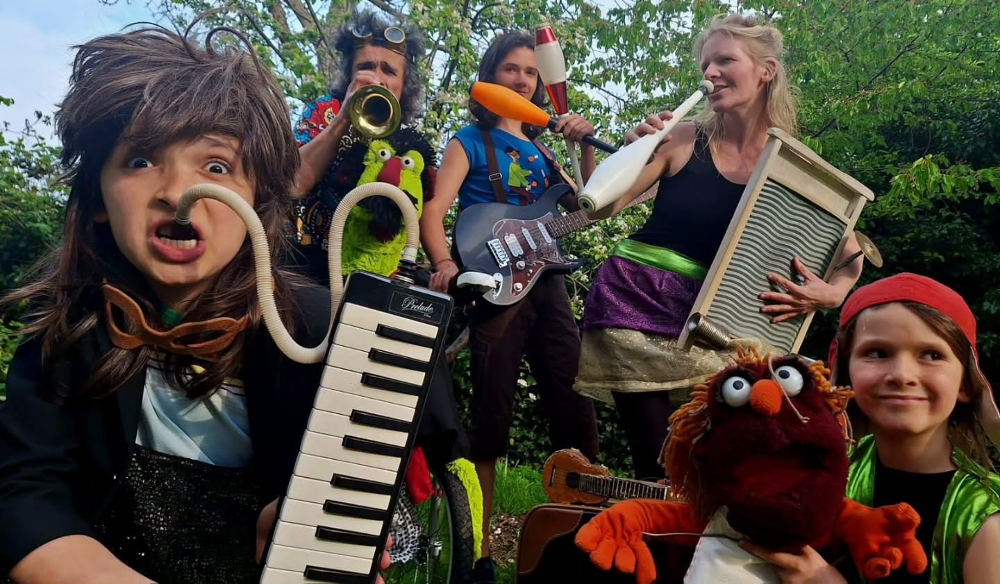
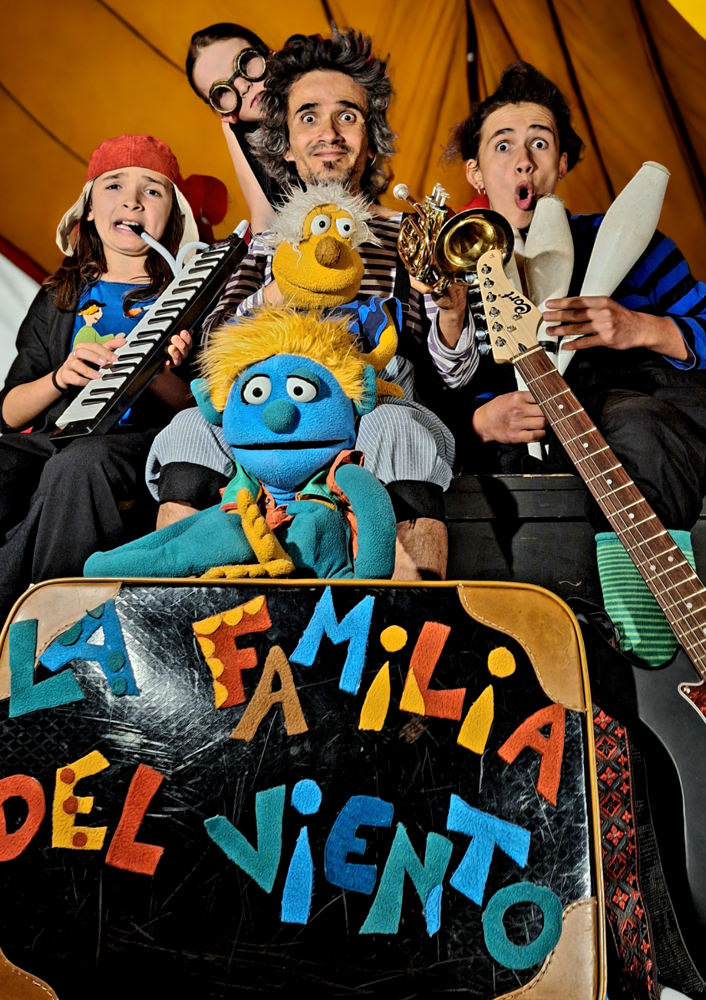
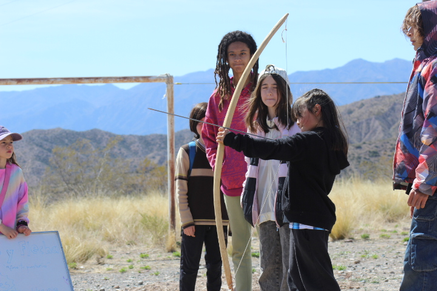
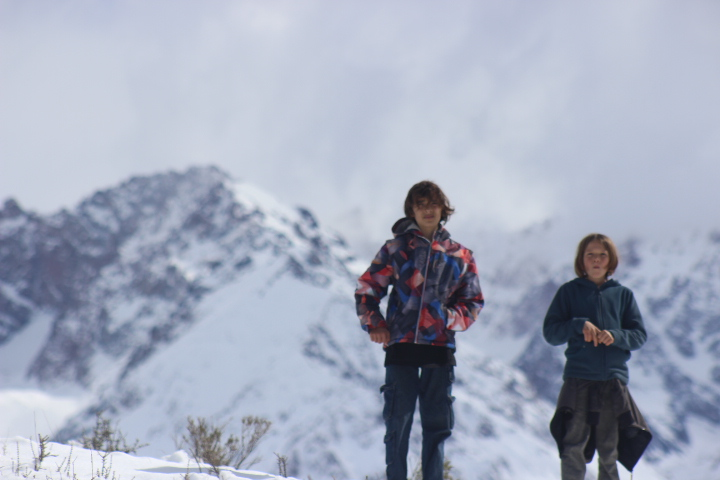
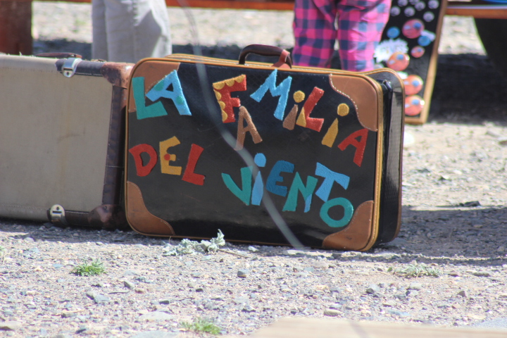
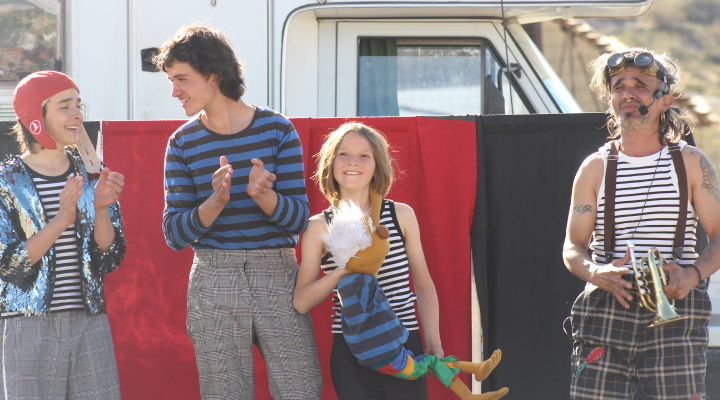

🧸
Juegos y juguetes
Juguetes cinéticos, juegos tradicionales, propuestas de habilidad y espacios para que niños y adultos jueguen juntos.
Una familia viajera que crea encuentros allí donde el camino los lleva.

Somos una familia de artistas que recorre caminos con sus instrumentos, títeres, juegos y espectáculos. El viaje se convirtió en una forma de aprender, compartir y encontrarnos con otras familias, artistas, campesinos, escuelas y comunidades.
“Cada lugar es diferente. Cada encuentro lo construimos con quienes nos reciben.”
30 minutos de circo, títeres, música en vivo, humor y participación del público. Una propuesta familiar para plazas, calles, festivales, escuelas, teatros y espacios culturales.

El espectáculo puede ser el comienzo. También podemos construir junto a cada lugar una jornada de juego, arte, conversación y encuentro.
Juguetes cinéticos, juegos tradicionales, propuestas de habilidad y espacios para que niños y adultos jueguen juntos.
Instrumentos, canciones, rondas y momentos participativos que convierten al público en parte del encuentro.
Espectáculo, títeres, malabares, monociclo y pequeñas experiencias circenses.
Conversaciones y experiencias alrededor del juego, la creatividad, la educación y el aprendizaje vivido.
Intercambios sobre agricultura sintropica, naturaleza, alimentación y proyectos comunitarios.
Una combinación flexible de actividades que se adapta a fincas, escuelas, ferias, festivales y comunidades.
Comida compartida. Niños jugando. Música. Rondas. Juegos construidos a mano. Circo. Títeres. Conversaciones sobre educación. Conversaciones sobre la tierra. Personas que se encuentran.
Eso también es cultura.
Para nosotros, el aprendizaje no está separado de la vida. Creemos en aprender haciendo, jugando, creando, viajando y compartiendo con otras personas y con la naturaleza.
El circo, la música, los títeres, los juegos, la construcción de objetos, la vida en familia y el contacto con la tierra son algunas de las herramientas que forman parte de nuestra experiencia.
Esta sección está creciendo. Queremos reunir aquí nuestras experiencias, ideas y propuestas educativas para familias, escuelas y comunidades.

Viajamos en familia, llevando nuestra casa, nuestros instrumentos, títeres y herramientas de trabajo. En el camino conocemos proyectos, aprendemos de cada territorio y buscamos nuevos lugares donde compartir.

También construimos juguetes cinéticos, juegos, títeres, objetos artesanales y pequeñas piezas que nacen de nuestra vida como familia de artistas.


Nos interesa encontrarnos con fincas agroecológicas, proyectos de agricultura sintropica, escuelas libres, comunidades, ecoaldeas, espacios culturales, ferias y festivales.
Podemos crear una propuesta adaptada a cada lugar: espectáculo, taller, juegos, música, conversatorio o una jornada completa.
El viaje también nos ha llevado a aprender haciendo. Creamos objetos, juguetes y títeres que nacen de la curiosidad, del juego y de la necesidad de inventar con lo que tenemos a mano.
Anillos, pulseras y pequeñas piezas hechas a mano en cobre y otros metales. Objetos para llevar un pedacito del camino.
Juguetes cinéticos, juegos de habilidad y pequeños mecanismos construidos para mirar, tocar, descubrir y jugar.
Diseñamos y construimos títeres para nuestros espectáculos, talleres y encuentros. Cada personaje nace de una historia y del juego.
Aquí iremos compartiendo videos de nuestros espectáculos, viajes, oficios, juegos y experiencias.
Si tienes una finca, escuela, comunidad, festival o espacio cultural y quieres crear un encuentro con nosotros, escríbenos.
lafamiliadelviento@gmail.com · @lafamiliadelviento23